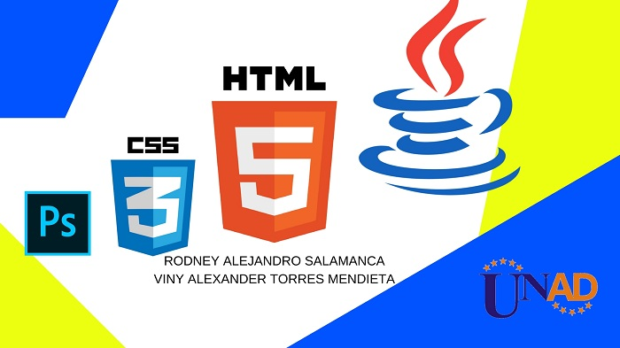

Definicion o concepto de lenguaje css
La esencia de Css esta en intentar separar la estructura del documento HTML al de su presentacion, por asi decirlo.
La pagina seria lo que hay debajo "Contenido"
y css seria el cistal que le da color, solo basta con cambiar el cristial que tenemos adelante y cambiara totalmente.
Ejemplo si tenemos un cristal verde, podemos poner uno azul y cambiara totalmente nuestra pagina.
Nuestro contenido seguira intanto pero nuestro diseño y colores y fuentes cambiaran, por esa razon se considera que es una separacion correcta de la pagina para su correcto funcionamiento.
CSS Es una herramienta muy sencilla e intuitiva, una vez que se llega a aprender. ya que para poder usarlo siempre lleva un identificador de etiqueta HTML "Como ejemplo h1" y luego indicamos con qué aspecto queremos que se muestren todas las etiquetas H1 que aparezcan en un documento. Al igual que con H1 podemos definir cómo queremos que se muestren las distintas partes del documento HTML, pudiendo en cada caso definir sus propiedades (color, tipo de fuente, tamaño, espacio, imagen) con algún determinado valor deseado.
Definicion hoja de estilos interna


Ambito de definicion para css
1- Definición en línea: En este método se define las propiedades de la etiqueta HTML con el atributo style dentro del mismo archivo HTML y se le asigna una determinada cadena que definiría el comportamiento. Ejemplo: p style="color:red;" En este ejemplo asignamos en línea a la etiqueta p el style (style es estilo en inglés) definido, en el que la propiedad color toma el valor red de modo que el texto se mostrará en rojo. Esta opción de definición, es rápida y para pequeñas cosas o reparaciones de mantenimiento web puede ser útil, pero si se abusa de esta técnica tendremos una página web muy poco legible ya que tendremos en un mismo archivo el contenido de la página web junto con su presentación. Hacer cambios en la presentación se hace entonces más complicado, al tener que ir revisando todas las etiquetas que queramos cambiar una por una.